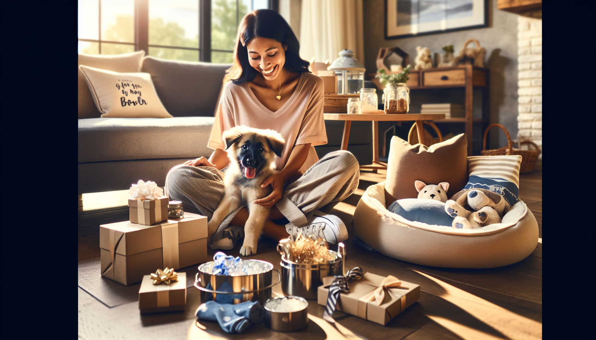

Welcoming a new puppy into the family is a joyful experience filled with wagging tails, playful antics, and an abundance of love. If you're on the hunt for the perfect gift for someone who's just welcomed a furry friend, you've come to the right place. From essential supplies to delightful treats, we've curated a list of thoughtful gift ideas that any new puppy owner will appreciate.
A puppy starter kit can be a lifesaver for new pet owners. These kits typically include a selection of essentials such as a comfortable bed, food and water bowls, a collar and leash, and a variety of toys. Opt for a kit that includes eco-friendly and durable items to ensure both the puppy’s safety and the environment’s well-being.
Nothing says 'welcome to the family' quite like personalized pet products. Consider getting a custom-made collar or name tag with the puppy’s name and the owner’s contact details. Personalized blankets and bowls can also make delightful and practical gifts. At SnoutAndAbout, you can find a wide array of customizable options to make your gift truly unique.
Training a new puppy can be a daunting task, but the right resources can make it a lot easier. Gift a comprehensive and easy-to-read puppy training book to help new owners instill good habits from the start. Look for books that cover basic obedience, house training, and socialization techniques.
Subscription boxes for dogs are a gift that keeps on giving. These boxes usually contain a variety of toys, treats, and accessories delivered monthly. It's a great way to keep puppies entertained and ensure they always have a new surprise to look forward to. Many subscription services also tailor the contents to the puppy’s size and age, ensuring a perfect fit.
Dog clothing is not just about style; it can also provide warmth and protection. For a fashionable yet functional gift, consider purchasing a cozy sweater or a raincoat for those inevitable wet walks. Make sure to choose apparel made from soft, breathable fabrics to keep the puppy comfortable.
Treats can be a great incentive during training sessions or simply a way to show some love. Opt for high-quality, natural treats that are free from artificial additives. Many brands offer treats specially formulated for puppies, featuring ingredients that support growth and development, such as omega-3 fatty acids and protein.
Interactive toys and puzzles are perfect for stimulating a puppy’s mind and keeping them entertained. These toys can help prevent boredom and destructive behavior by providing mental and physical exercise. Look for durable toys that can withstand a puppy’s chewing and enthusiasm.
Choosing the right gift for a new puppy owner is all about combining practicality with thoughtfulness. By selecting items that cater to both the puppy’s needs and the owner’s lifestyle, you’ll ensure your gift is appreciated and used. Explore the wide variety of personalized pet products available at SnoutAndAbout on Etsy to find the perfect unique gift. Happy shopping, and here’s to many joyful puppy days ahead!
Shop personalized pet products at SnoutAndAbout on Etsy.